Sep 4, 2026
The UCA Light Heavyweight Division continues to showcase its depth and talent as Anthony Thompson of the Alameda Fire Department prepares to make his highly anticipated ring debut against #8 Rance Garces, FBOP –…
Read more →
Sep 1, 2026
The Masters UCA Super Heavyweight Champion John Olson, CDCR – Avenal State Prison, has already reached the top of one division but now he is chasing UCA history. “I don’t know what your plan is for me, but can I…
Read more →
Aug 31, 2026
Two evenly matched fighters will make their ring debuts and begin their UCA journey when Juan Carlos Montes-Diaz of the San Joaquin County Sheriff’s Office squares off against Andres Lopez, U.S. Navy – Lemoore. On…
Read more →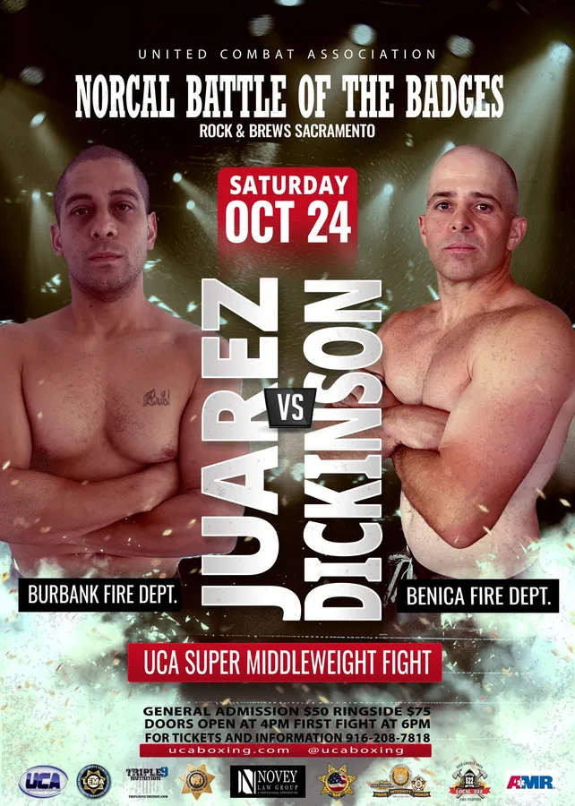
Aug 30, 2026
Two firefighters will trade their turnout gear for boxing gloves when Jesus Juarez of the Burbank Fire Department squares off against newcomer Patrick Dickinson of the Benicia Fire Department at the NorCal Battle…
Read more →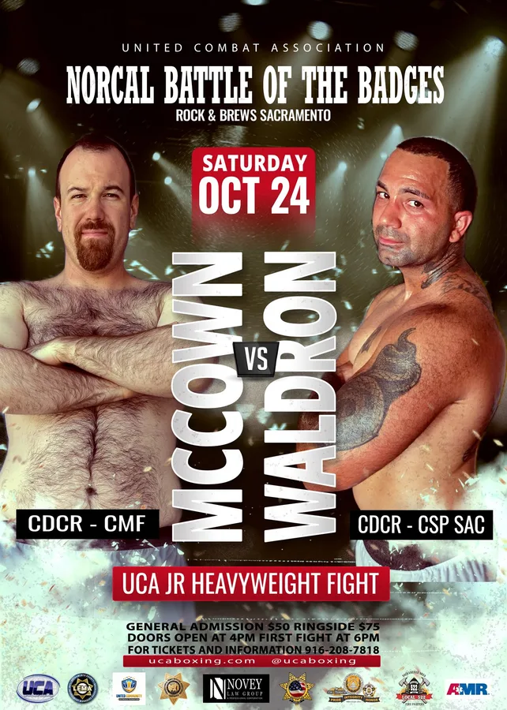
Aug 28, 2026
The roadwork, sparring, sacrifice, and long days in the gym are underway for the UCA 5th ranked Tyler McCown, CDCR–CMF. McCown is splitting his training between End Game Training Center in Vacaville, CA, under the…
Read more →
Aug 25, 2026
The rankings are expected to see significant movement following the NorCal Battle of the Badges on October 24, 2026. With 15 hungry, talented fighters making their UCA debuts, new names will emerge, divisions will…
Read more →
Aug 23, 2026
Fight fans, get ready for a classic clash of styles when the Masters UCA Light Heavyweight Saul Pelayo, U.S. Army, squares off with the tall and rangy Keith Sager of the Elk Grove Police Dept. Sager will need to…
Read more →
Aug 21, 2026
UCA Jr Heavyweight Loaay Albarati, CDCR–Salinas Valley State Prison is preparing to make a powerful first impression when he steps into the ring for his highly anticipated debut against two fight veteran UCA #4…
Read more →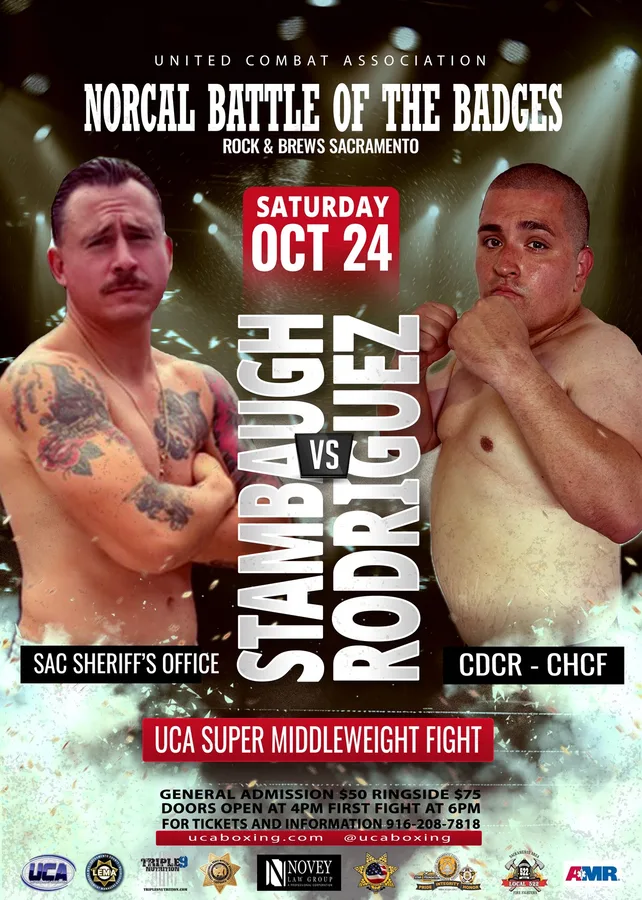
Aug 20, 2026
The UCA Super Middleweight Division will welcome a fresh face while another fighter looks for a fresh start. Nick Stambaugh of the Sacramento Sheriff’s Office will make his highly anticipated ring debut against…
Read more →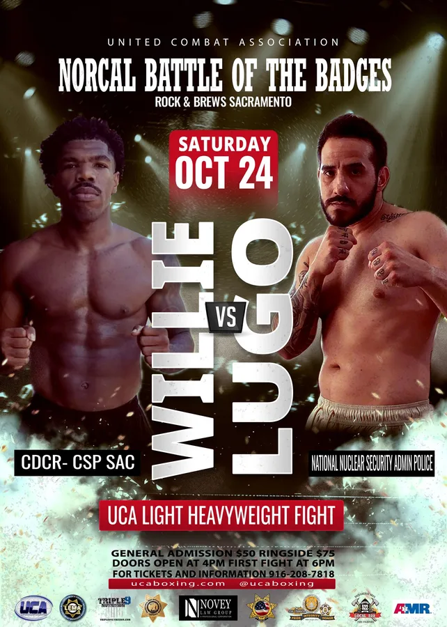
Aug 19, 2026
Two undefeated UCA Light Heavyweights will put their perfect records on the line when Chris Lugo, National Nuclear Security Police, squares off with undefeated 3rd ranked JaVun Willie, CDCR–CSP Sacramento, in a…
Read more →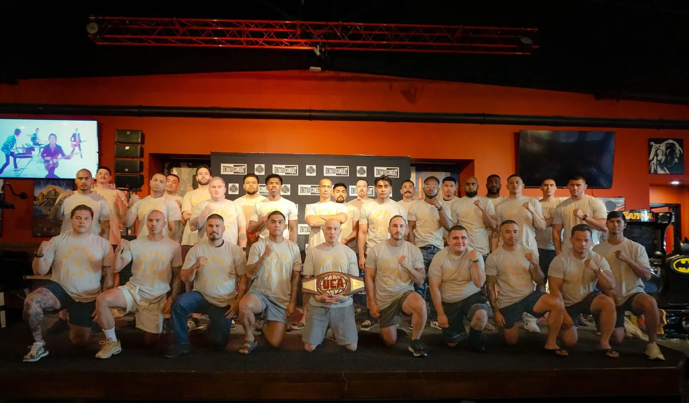
Aug 18, 2026
UCA Jr Heavyweight Loaay Albarati representing CDCR – Salinas Valley State Prison will make his highly anticipated ring debut at the NorCal Battle of the Badges on Saturday, October 24, 2026, at Rock & Brews…
Read more →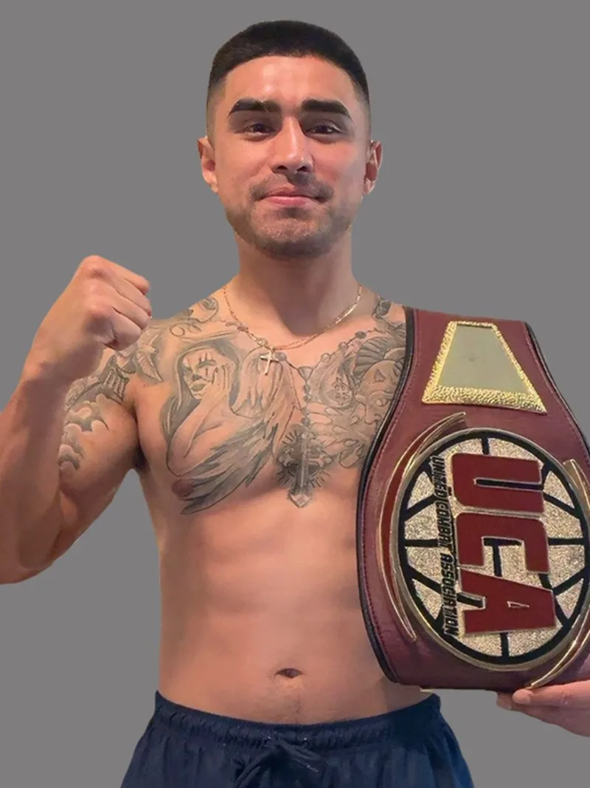
Aug 17, 2026
Two Atwater Federal Prison Officer stablemates are turning up the intensity at Haro’s Boxing Gym in Merced under the guidance of UCA Coach of the Year Jesus Haro. Home to elite amateur and professional fighters and…
Read more →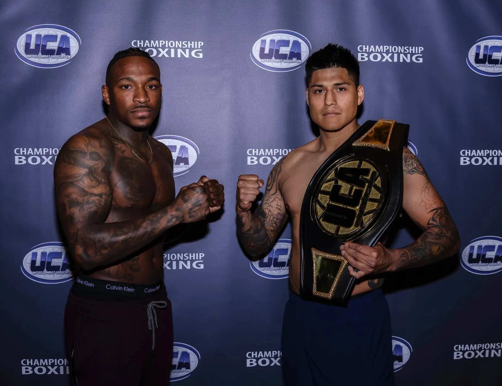
Aug 16, 2026
Three fight veteran Keith Sager of the Elk Grove Police Dept is no stranger to the pressure of fight night and brings valuable ring experience into training camp as he prepares to make his UCA debut. He is training…
Read more →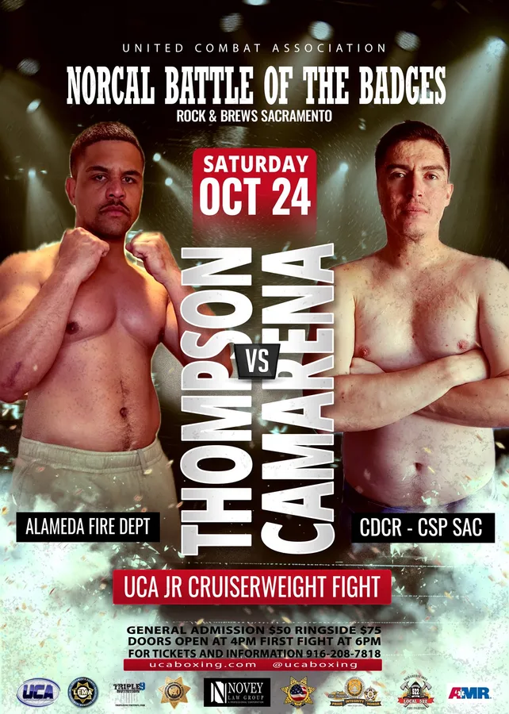
Aug 15, 2026
The UCA Jr Cruiserweight Division is set for an intriguing showdown when Anthony Thompson of the Alameda Fire Dept makes his ring debut against Adrian Camarena, CDCR – CSP Sacramento. Thompson has been grinding…
Read more →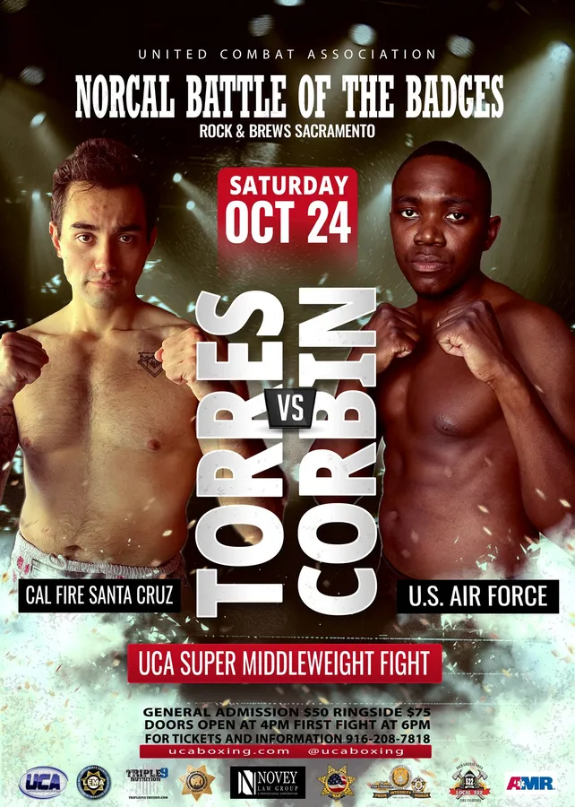
Aug 14, 2026
Two hungry newcomers are ready to make their mark in the talent filled UCA Super Middleweight Division. Arderia Corbin, representing the United States Air Force, is ready to make a statement in his highly…
Read more →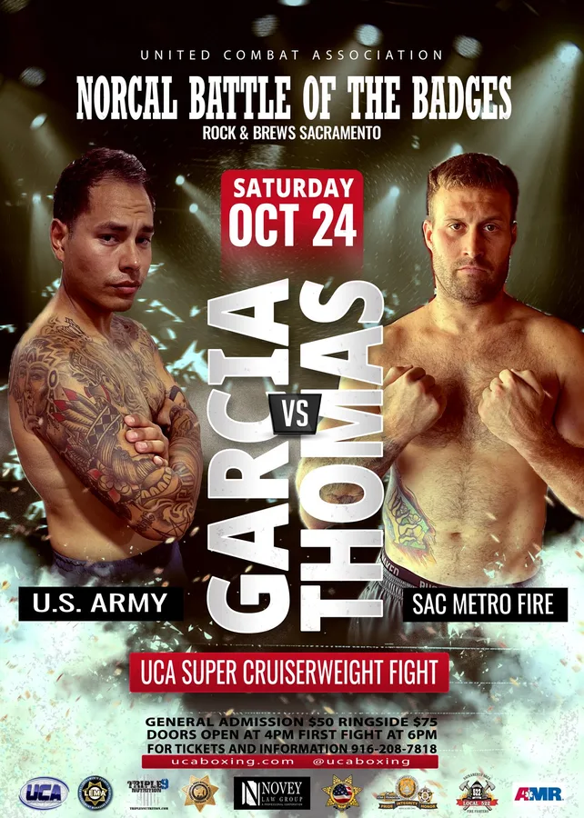
Aug 13, 2026
Two determined warriors are ready to introduce themselves to the UCA Super Cruiserweight division. Rene Garcia, U.S. Army will square off with Pierce Thomas of the Sacramento Metropolitan Fire District, in a highly…
Read more →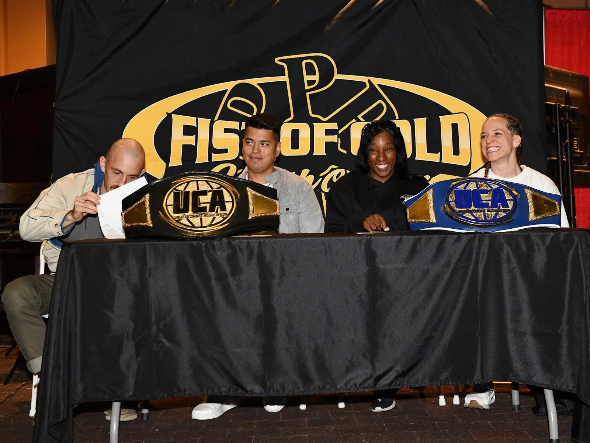
Aug 12, 2026
UCA Super Middleweight Arderia Corbin, representing the United States Air Force, is in training camp at the George Duke Sports Center in Vacaville under the guidance of Coach Jose Uribe as he prepares for his ring…
Read more →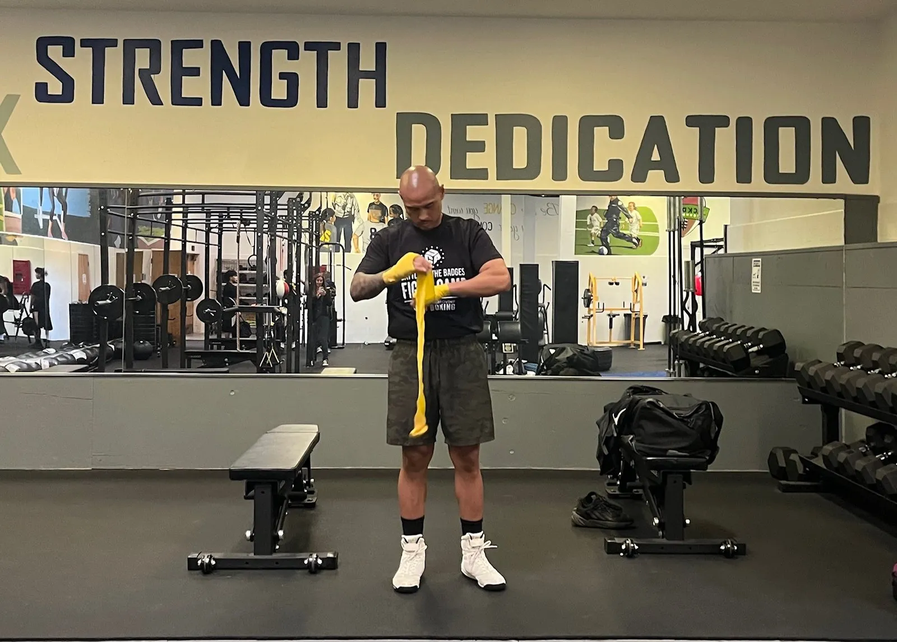
Aug 11, 2026
For the Masters UCA 2nd ranked Super Middleweight Edward Del Rosario, Solano County Probation Dept the stakes could not be higher. Del Rosario wants another opportunity to challenge the Masters UCA Super…
Read more →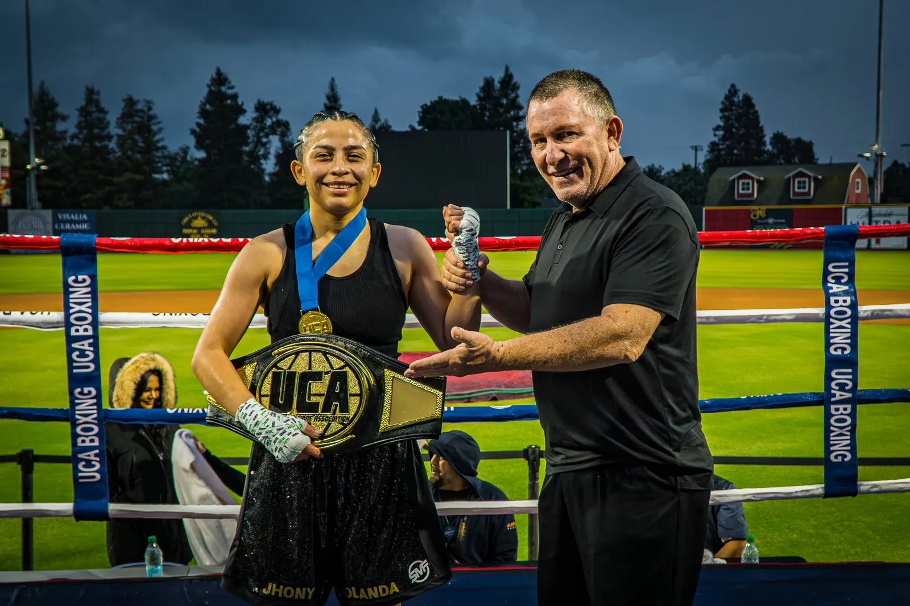
Aug 10, 2026
The wait is almost over for firefighter stablemates UCA Middleweight Alberto Torres, CAL FIRE – Santa Cruz, and UCA Super Cruiserweight Pierce Thomas, Sacramento Metropolitan Fire District. After waiting more than…
Read more →
Aug 9, 2026
National Nuclear Security Administration Police Officer Chris Lugo will no longer be an unknown name. After spending the past decade training at various boxing gyms, Lugo has spent the last year sharpening his…
Read more →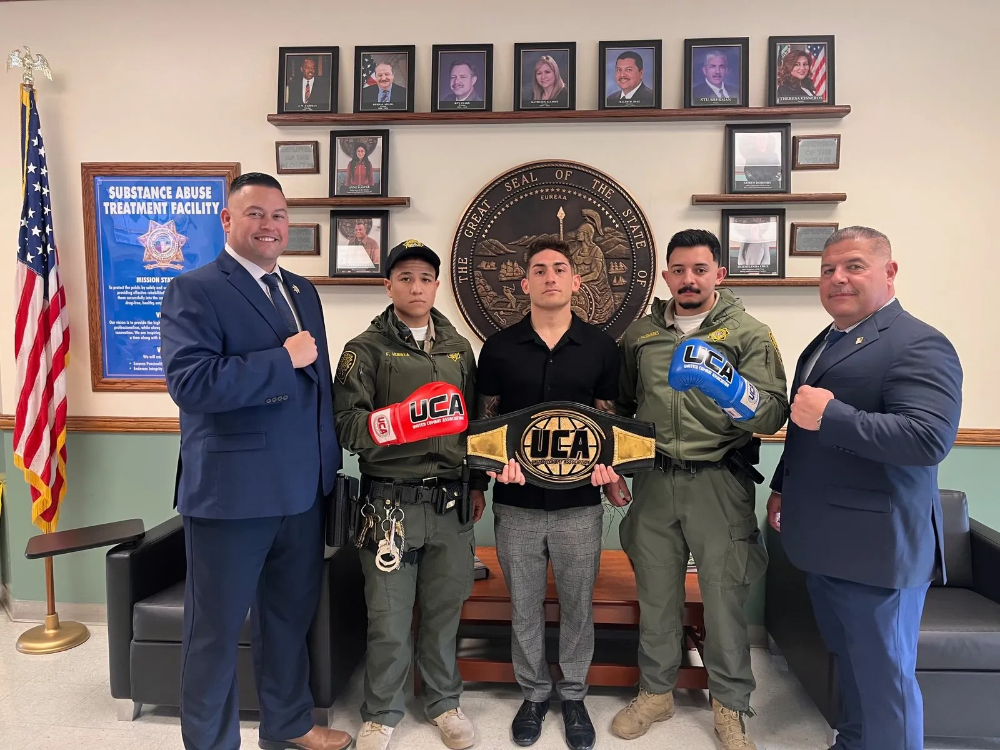
Aug 8, 2026
Making a boxing debut is one of the toughest challenges in combat sports. Months of training prepare a fighter physically, but nothing can fully replicate the pressure of stepping into the ring for the first time…
Read more →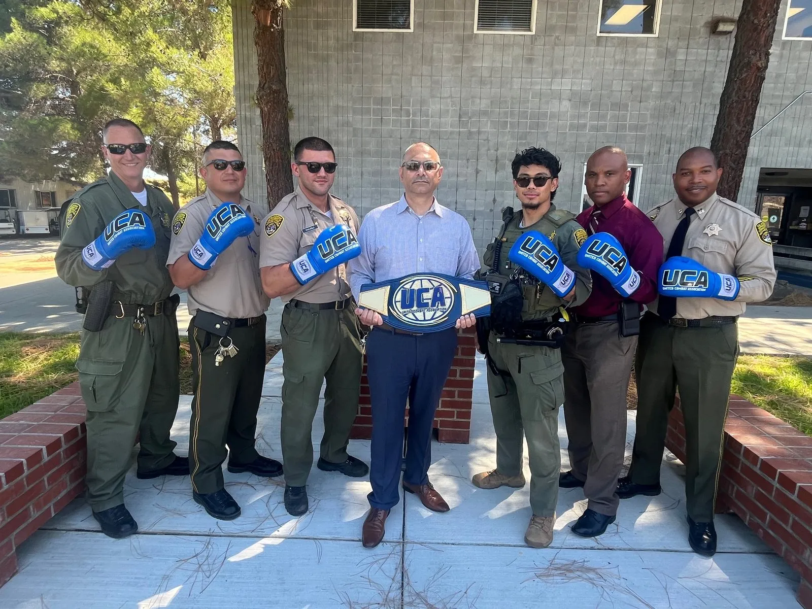
Aug 7, 2026
Stablemates 4th ranked UCA Jr Heavyweight Pedro Figueroa, Tulare County Fire Dept and UCA Cruiserweight Rene Garcia, Army are putting in the work at the Lemoore Boxing Club as they prepare for the NorCal Battle of…
Read more →Aug 6, 2026
Every division eventually gets shaken up by a new fighter ready to prove he belongs at the top. The UCA Light Heavyweight Anthony Thompson of the Alameda Fire Department might be that fighter. Anthony is grinding…
Read more →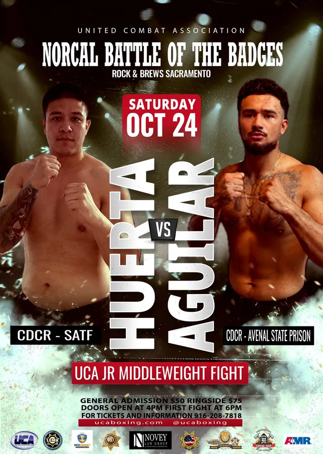
Aug 5, 2026
Every fighter remembers the moment they step through the ropes for the very first time. Two first time competitors will experience that moment together when Felipe Huerta, CDCR – Substance Abuse Treatment Facility…
Read more →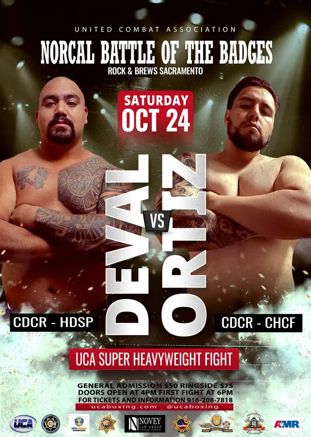
Aug 4, 2026
Fight fans, brace yourselves for a dog fight when battle ready Jose Deval, CDCR – High Desert State Prison makes his ring debut against the #6 ranked Beto Ortiz, CDCR–CHCF at the NorCal Battle of the Badges on…
Read more →Aug 3, 2026
Three fighters from Grillo Boxing Gym in Kerman, California, are grinding through training camp under the guidance of 2X UCA Coach of the Year Juan Berber. Making their UCA debuts are Jr Middleweight Anthony…
Read more →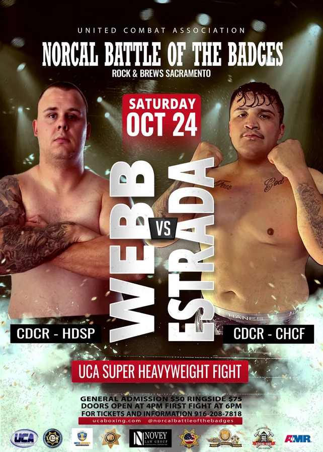
Aug 2, 2026
Sometimes the toughest losses create the most dangerous fighters. When UCA Super Heavyweights Matt Webb, CDCR – High Desert State Prison and Jorge Estrada, CDCR – California Health Care Facility step into the ring…
Read more →Aug 1, 2026
Fight fans, get ready for a war in the UCA Jr Heavyweight Division when #5 ranked Tyler McCown, CDCR – CMF squares off with #3 ranked Brandon Waldron CDCR–CSP Sacramento. Tyler and Brandon know this fight is an…
Read more →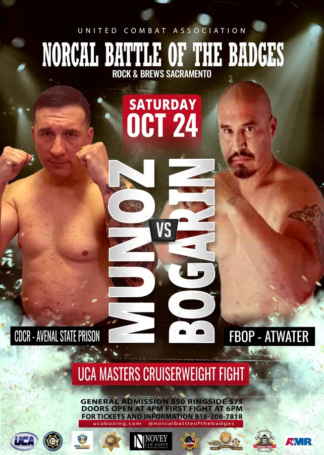
Jul 31, 2026
When Masters UCA Cruiserweights Hector Munoz, CDCR – Avenal State Prison and Charlie Bogarin, FBOP – Atwater step into the ring at the NorCal Battle of the Badges on Saturday, October 24, 2026, expect two warriors…
Read more →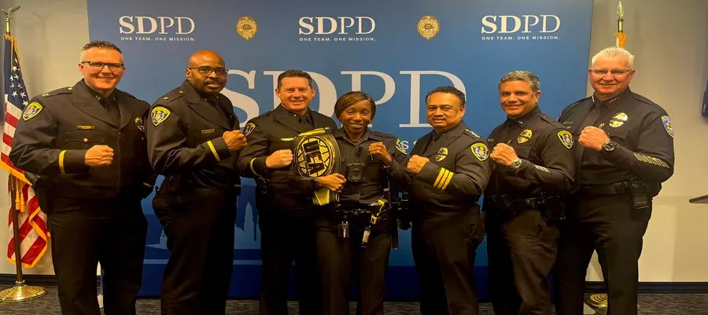
Jul 30, 2026
Masters UCA Super Middleweights Sam Oriyavong of the Sacramento Sheriff’s Office and Edward Del Rosario of Solano County Probation are set to square off in what promises to be an exciting showdown. Both are already…
Read more →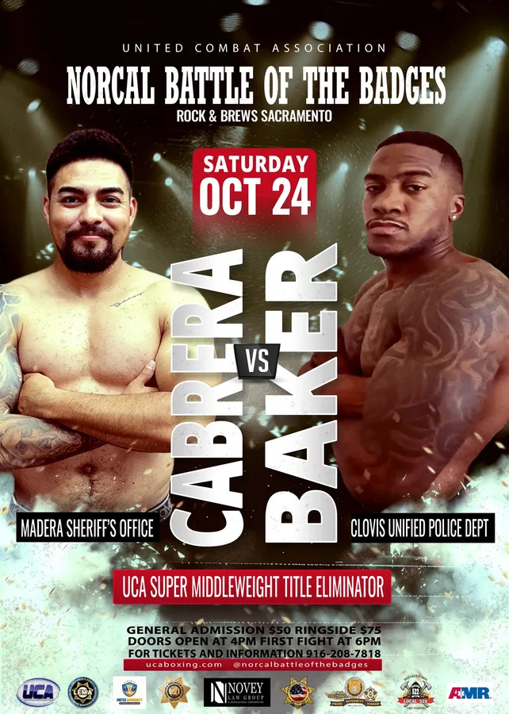
Jul 29, 2026
The biggest fight on the NorCal Battle of the Badges card that isn’t a title fight may steal the show when Ricky Cabrera, Maderah Sheriff’s Office takes on Dee Baker, Clovis Unified School District Police Dept in a…
Read more →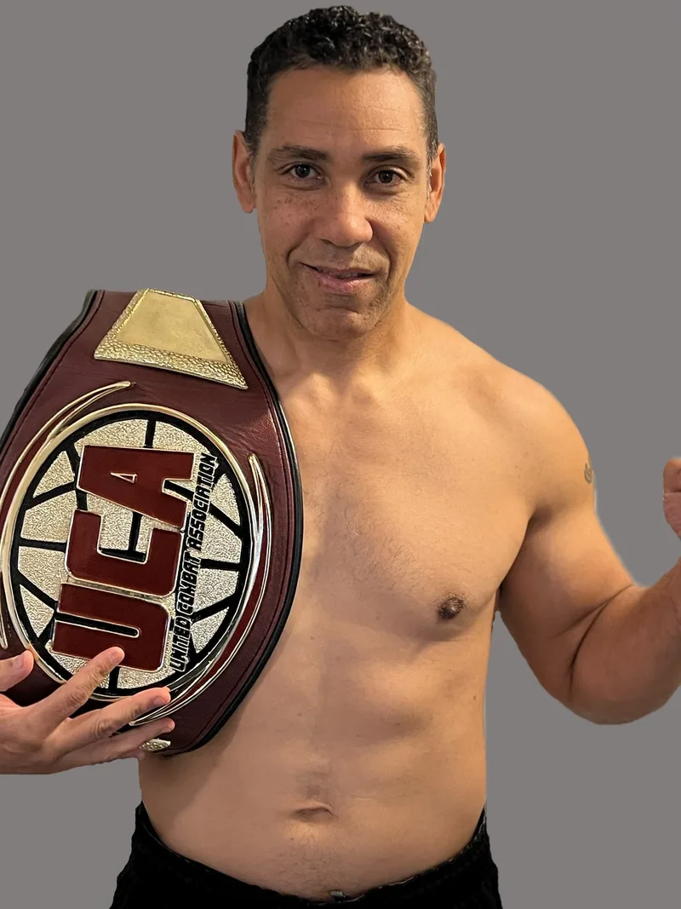
Jul 28, 2026
A historic showdown is on the horizon as the Masters UCA Jr Heavyweight Champion James Dorris, Folsom Police Dept challenges the Masters UCA Super Cruiserweight Champion Glen Gilhuber of the Eugene (Oregon) Police…
Read more →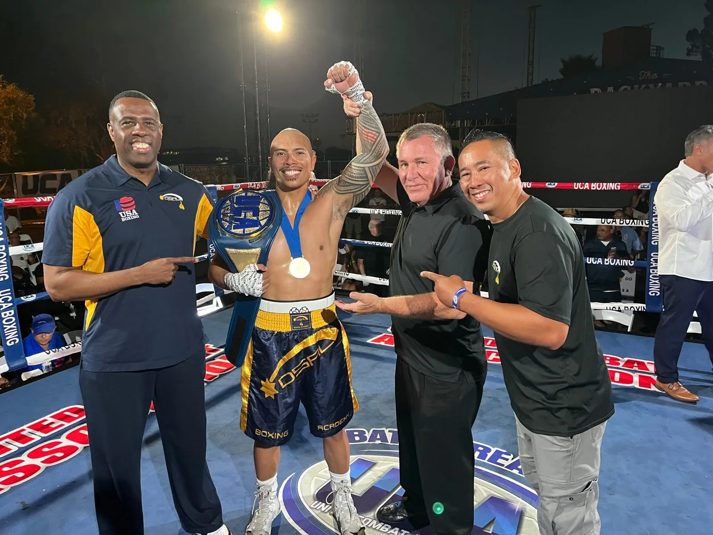
Jul 27, 2026
The countdown has officially begun for the NorCal Battle of the Badges on Saturday, October 24, 2026, at Rock & Brews Restaurant & Bar Outdoor Venue in Sacramento. Join us for an unforgettable action packed evening…
Read more →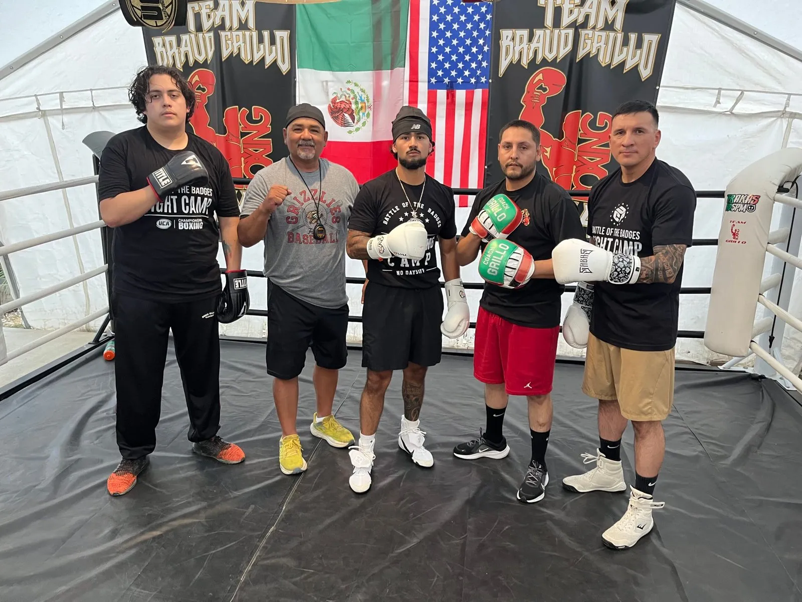
Jul 20, 2026
The United Combat Association is proud to present the NorCal Battle of the Badges on Saturday, October 24, 2026, at the Rock & Brews Outdoor Venue in Sacramento. This action packed evening will feature UCA…
Read more →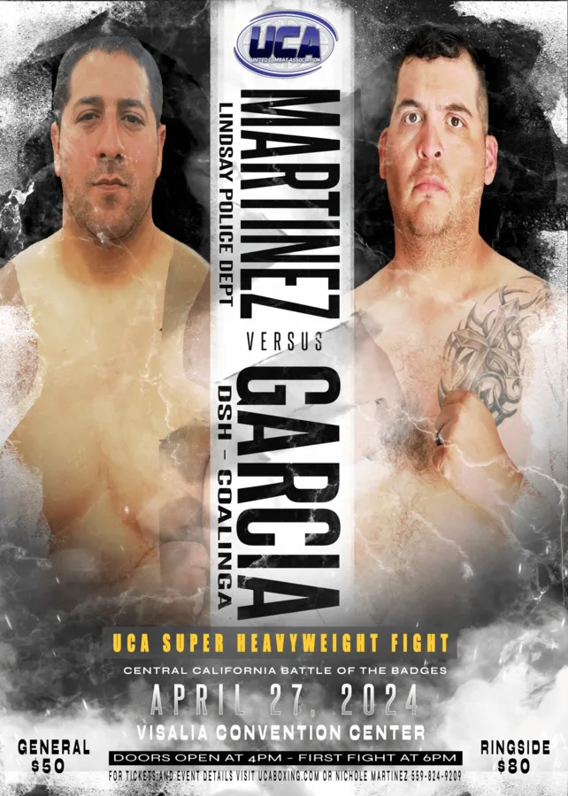
Jul 4, 2026
These fighters have put together impressive undefeated starts and are proving they have the talent, discipline, and determination to make an impact. While every boxer follows a different path, one thing remains…
Read more →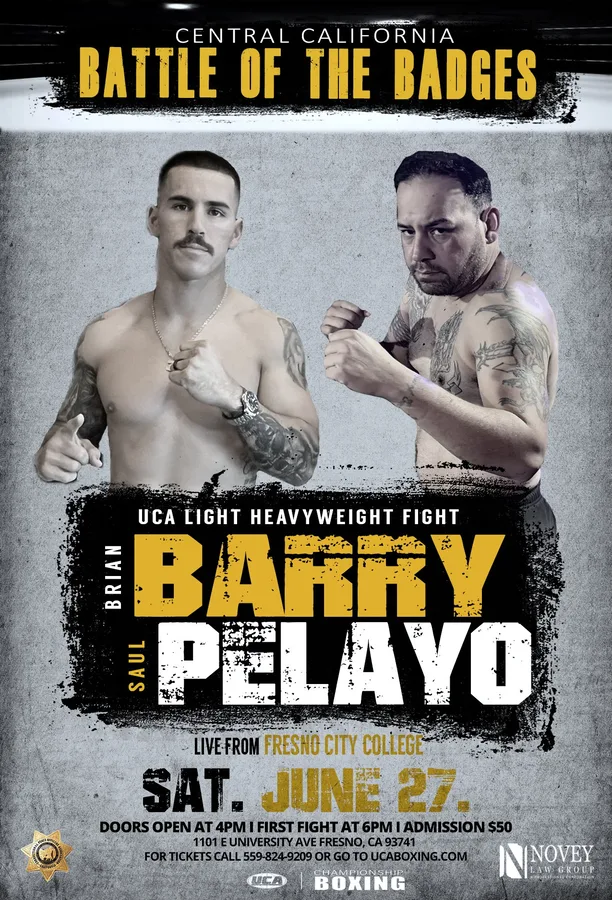
Jun 28, 2026
Central California Battle of the Badges: “Unfinished Business” Event Recap After Mother Nature brought an early end to April’s Central California Battle of the Badges at Valley Strong Ballpark, fighters and fans…
Read more →Jun 27, 2026
Bout 1 – UCA Light Heavyweight Fight Saul Pelayo, Army vs Brian Barry, LAFD Barry winner by 2nd round TKO. Bout 2 – UCA Super Heavyweight Fight Beto Ortiz, CDCR – CHCF vs Ismael Alvarez, Fresno PD Alvarez winner by…
Read more →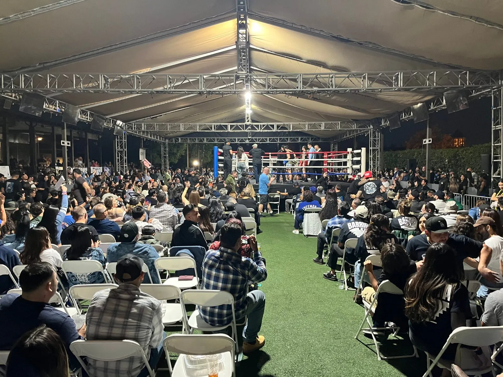
Jun 26, 2026
The weigh-ins are complete, every bout is official, and the fighters came face to face one last time before tomorrow night’s Central California Battle of the Badges: “Unfinished Business.” For months, these 20…
Read more →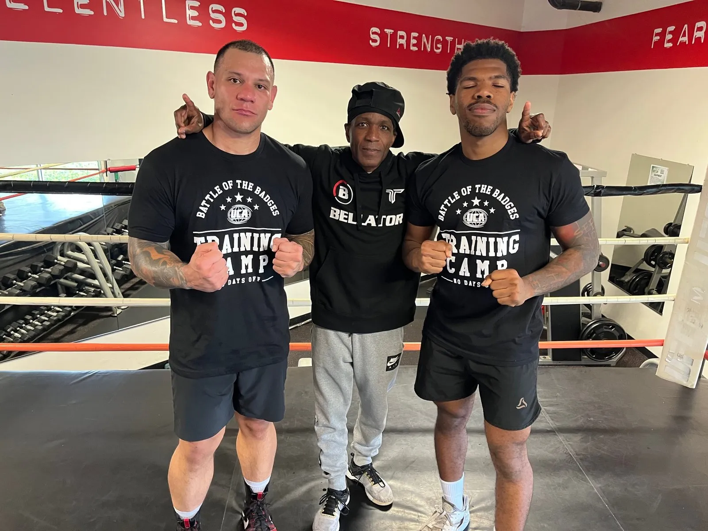
Jun 25, 2026
This Friday, the road to “Unfinished Business” reaches its final stop as 20 battle ready fighters step onto the scale to officially lock in their matchups for the Central California Battle of the Badges. Hosted by…
Read more →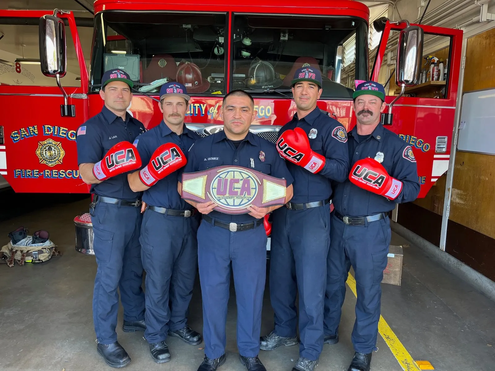
Jun 25, 2026
UCA Fighter Profile Zachary Martinez, Lindsay Police Department For Zachary Martinez, stepping into the ring at the Central California Battle of the Badges is the culmination of a lifetime spent embracing…
Read more →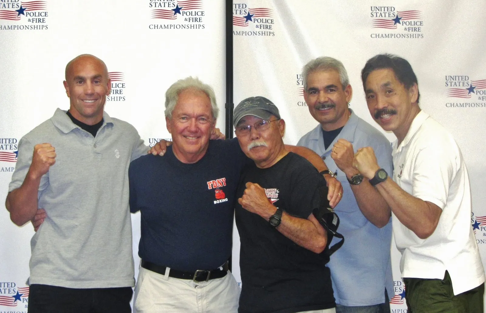
Jun 24, 2026
After months of preparation, sacrifice, and hard work, 20 fighters are ready to step through the ropes this Saturday night at the Central California Battle of the Badges, “Unfinished Business” at Fresno City…
Read more →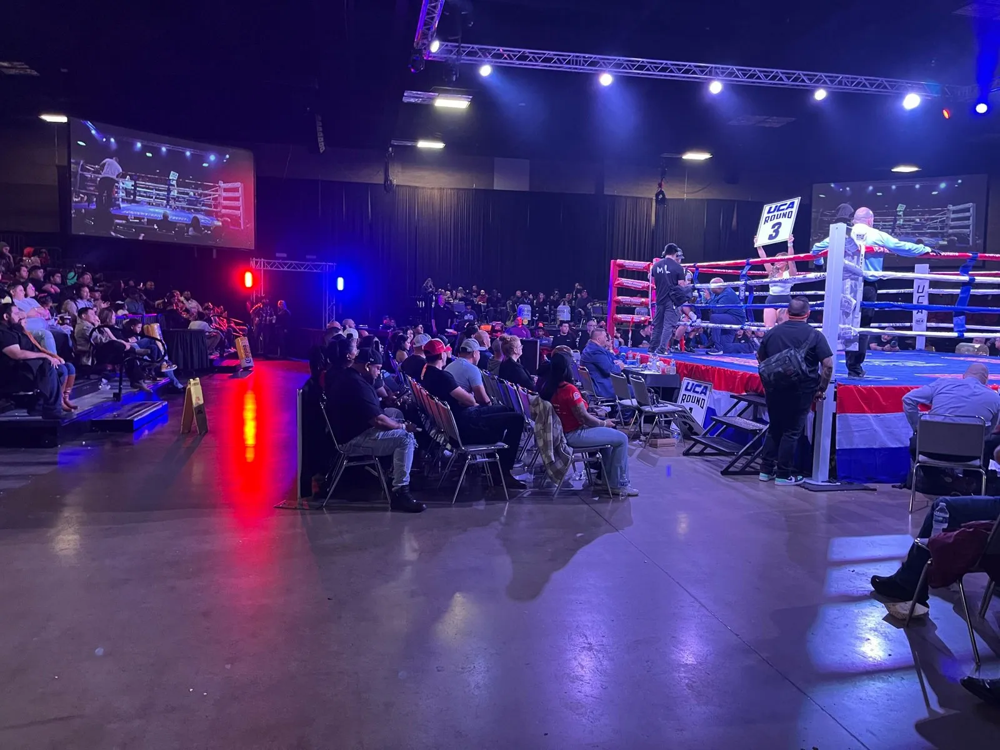
Jun 23, 2026
This Saturday at the Central California Battle of the Badges: Unfinished Business event at Fresno City College, a new competitor will take her first steps into the spotlight. Representing the Visalia Police…
Read more →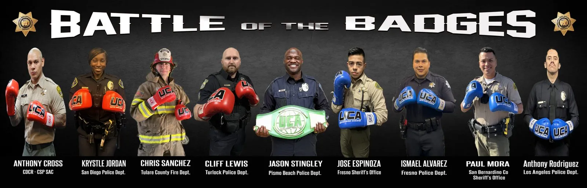
Jun 22, 2026
Months of early mornings, late nights, roadwork, sparring, and sacrifice have all led to this moment. For the past several months, 20 dedicated public safety fighters have pushed themselves beyond their limits…
Read more →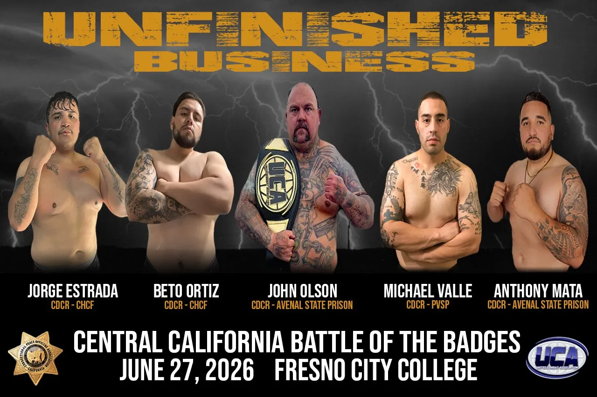
Jun 20, 2026
When the action heats up at the Central California Battle of the Badges: Unfinished Business event, fans will have two experienced voices guiding them through every moment inside the ring. Providing commentary for…
Read more →Jun 18, 2026
When Roy Bohannan steps into the ring for his UCA debut, he’ll be entering unfamiliar territory, but he’s embracing the challenge head on. A police officer with the Lemoore Police Department for the past three…
Read more →Jun 16, 2026
Screenshot The success of any fighter is built on more than training and what happens inside the ring. A fighter is also strengthened by the support of leadership who believe in them. Chief Deputy Warden (A)…
Read more →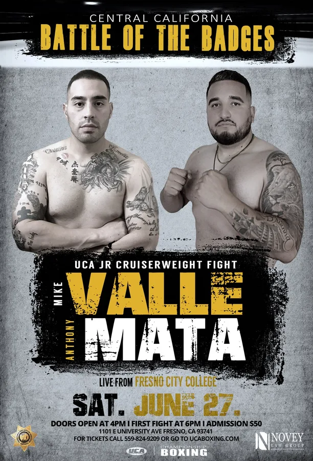
Jun 12, 2026
The countdown is on as Five determined CDCR fighters prepare to represent their institutions at the Central California Battle of the Badges “Unfinished Business” event. Jorge Estrada and Beto Ortiz from California…
Read more →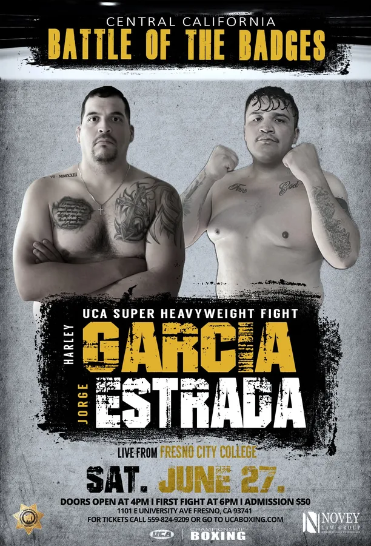
Jun 10, 2026
Ready for the Challenge On June 27, 2026, Jorge Estrada will make his long-awaited boxing debut when he steps into the ring against Harley Garcia, DSH – Coalinga at the Central California Battle of the Badges:…
Read more →Jun 8, 2026
The Central California Battle of the Badges “Unfinished Business” card is more than just another fight card it is an opportunity to deliver on a commitment we made to the fighters and fans. On Saturday, June 27,…
Read more →Jun 7, 2026
A Lifetime Athlete Takes on a New Challenge For more than three years, Ivan Mendoza has served with Kings County Probation, dedicating himself to helping his community. Now, he is preparing for an entirely…
Read more →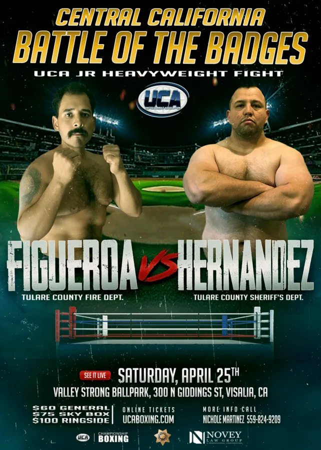
Jun 6, 2026
Beginning Saturday, June 27, 2026, the Randy Hoppert Memorial Award will be presented annually to the winner of the Tulare County Sheriff’s Office vs. Tulare County Fire Department rivalry bout at the Central…
Read more →Jun 5, 2026
For the past seven years, Lisa Chapa has proudly served her community as a police officer with the Visalia Police Department. While protecting and serving the citizens of Visalia is her profession, challenging…
Read more →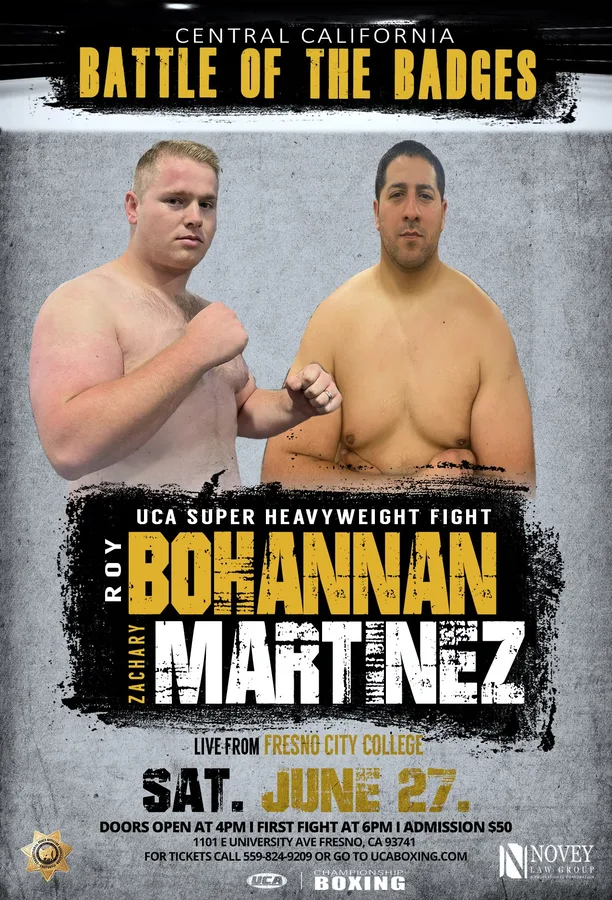
Jun 4, 2026
The UCA Super Heavyweight division welcomes two new faces. Roy Bohannan, Lemoore Police Dept and Zachary Martinez, Lindsay Police Dept make their highly anticipated UCA debuts at the Central California Battle of…
Read more →Jun 3, 2026
The UCA Jr Cruiserweight division is about to feel the impact when Michael Valle, CDCR – Pleasant Valley State Prison collides with Anthony Mata, CDCR – Avenal State Prison at the “Unfinished Business” Central…
Read more →Jun 2, 2026
From the Wrestling Mat to the Fight Game Before Anthony Mata ever stepped into a boxing ring or MMA cage, he was building his foundation on the wrestling mat. A four-year varsity wrestler, Mata competed at a high…
Read more →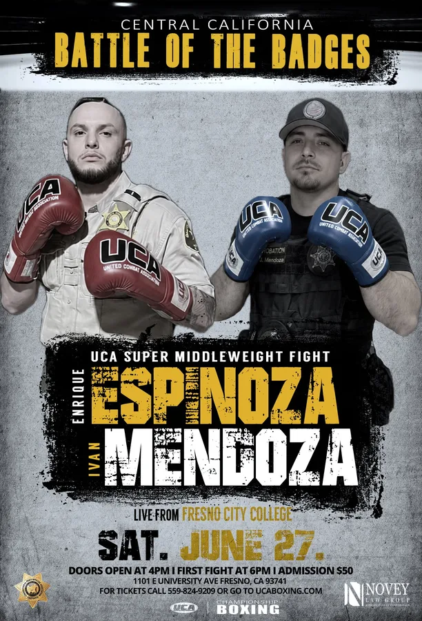
May 29, 2026
Every fighter starts somewhere. On June 27, 2026 Kings County Probation officer Ivan Mendoza will make his UCA debut with the chance to immediately establish himself as a fighter to watch. A victory over a proven…
Read more →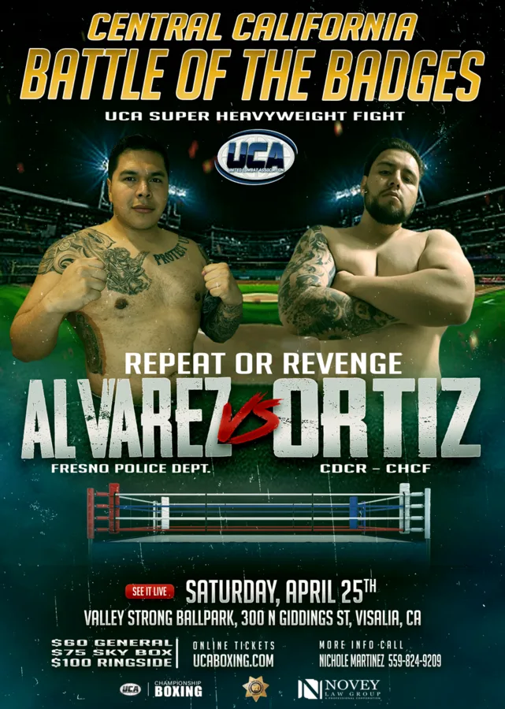
May 28, 2026
Some rivalries refuse to die after one fight. UCA Super Super Heavyweights #3 Ismael Alvarez representing the Fresno Police Dept and #8 Beto Ortiz, CDCR – California Health Care Facility are stepping back into the…
Read more →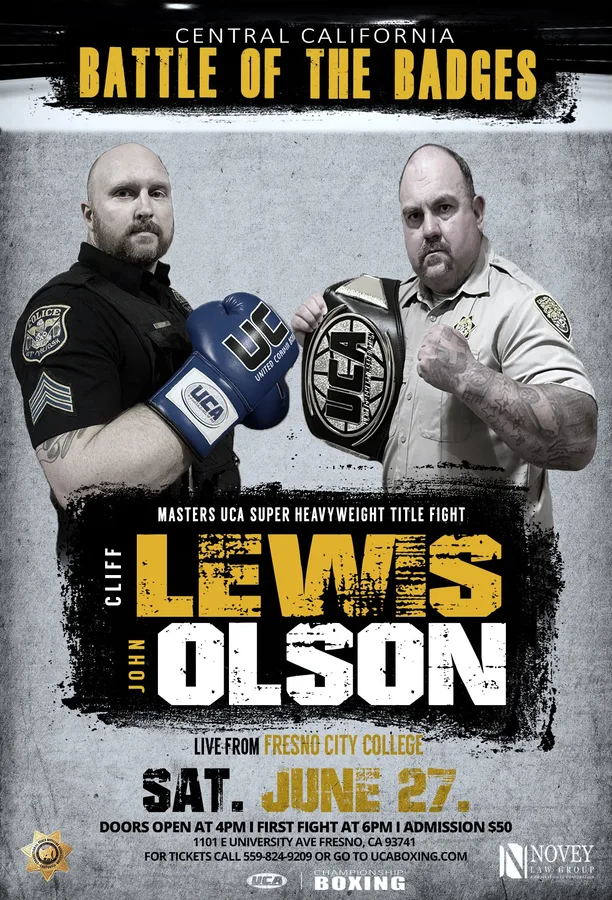
May 27, 2026
The road to the Masters UCA Super Heavyweight Championship has led right back to where it all started. Saturday night June 27, 2026, at the Central California Battle of the Badges – Unfinished Business, the rivalry…
Read more →May 26, 2026
With the countdown at 31 days until the Central California Battle of the Badges “Unfinished Business” event, training camp is at an intense level for 3 UCA Super Heavyweights. The anticipation is building for two…
Read more →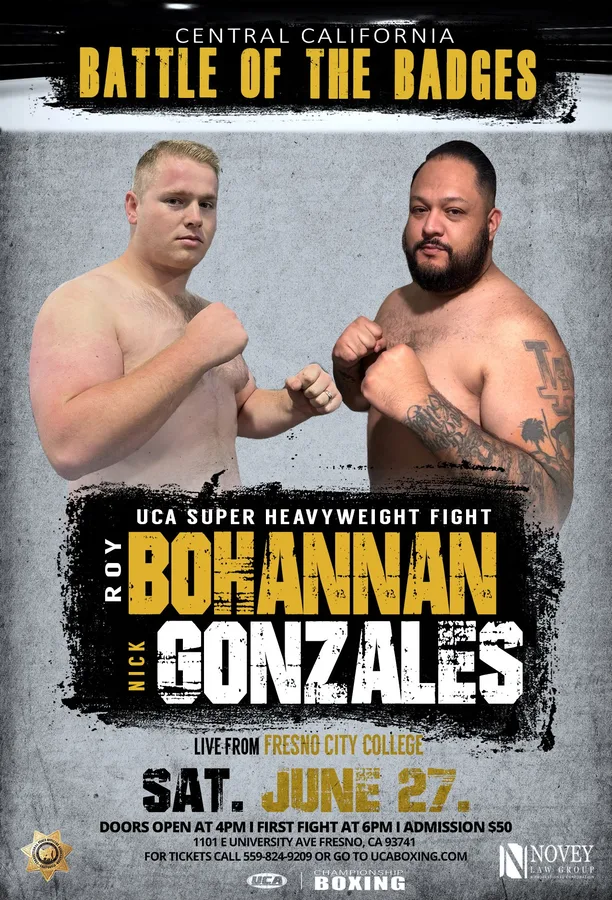
May 23, 2026
When two UCA Super Heavyweights make their first walk to the ring, the pressure is immediate and the stakes are real. In a division where one punch can change everything, there is no easing into the spotlight.…
Read more →